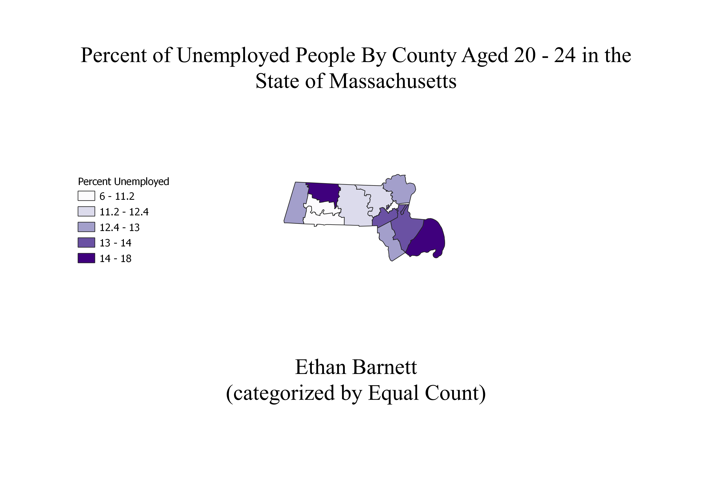
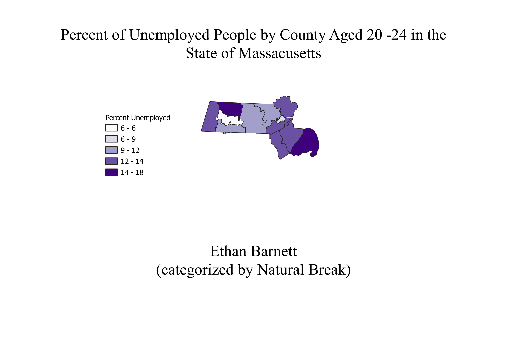
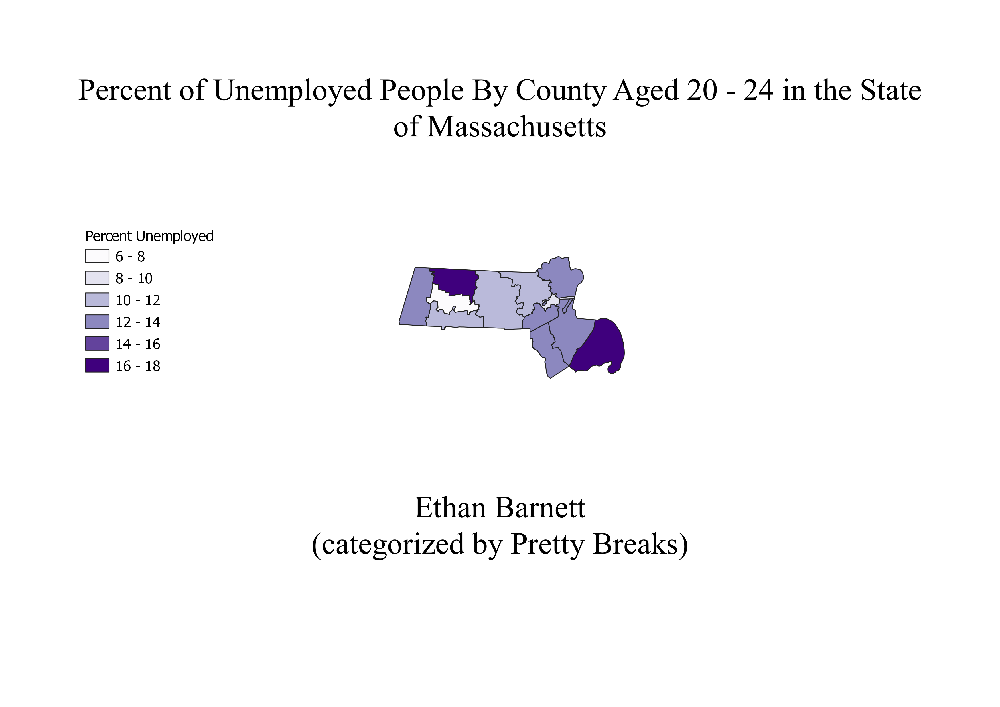

Homework 8: Unemployment Choropleth with Ratios
Ethan Barnett
These maps each show the amount of unemployed people by county in the state of Massachusetts; however, each map is categorized differently, each with their own advantagesand disadvantages that will be discussed later.

This first map is categorized using the equal count method. This method separates the data given into different parts that are all equal. I did some changed on these values to make it easier to read. The advantage of this method is that it separates the data into equal parts, which makes the data even. The disadvantage of this method is that the numbers are very hard to read.

This second map is categorized using the pretty break method. This method separates the data into easy to read intervals. The advantage of this method is that it makes the data very easy to read and relate to. The disadvantage of this method is that it does not accuratly separate the data on the map, so it ends up clustering some parts together making it look inaccurate.

This third map is categorized using the equal break method. This method separates the data into equal intervals, similar to the previous map; however, this differs in that it takes the total amount in the data set and splits it equally in as many classes as specified. This is advantageous because it makes the separations fair and equal. The disadvantage to this method is that it is not as convincing as other methods if one has a particular agenda, and it also does not work well with abnormal datasets with outliers.
The reaosn I decided to take data regarding people aged 20 to 24 was because I was interested to see how COVID affected people around my age, and whether there was a large workign force of people my age in associattion with the total population of people my age in the state. I came to find that there was not a very large percentage of people aged 20 to 24 who were working in the year 2019, which was quite interesting. Honestly, I thought there would be a lot more people in the work force.
Data used for this project (same as the previous homeworks data)
CSV dataset
Link to shapefile